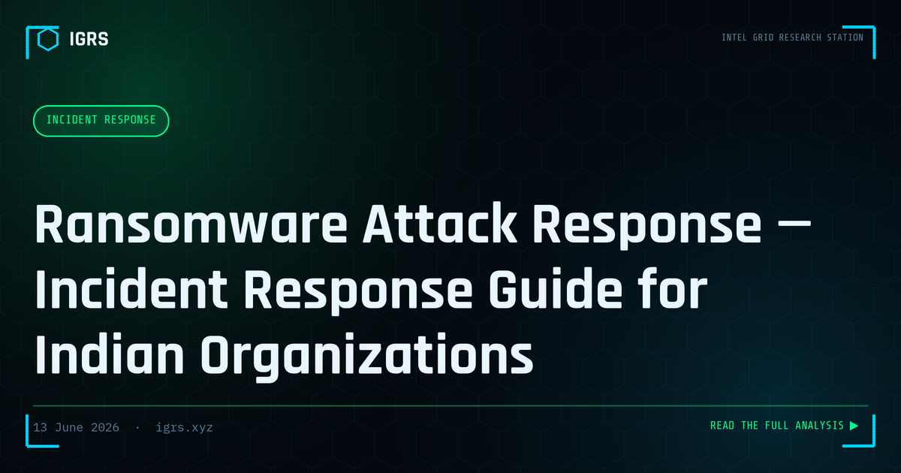

Ransomware Attack Response — Incident Response Guide for Indian Organizations
The Ransomware Crisis in India
Ransomware attacks on Indian organisations have surged dramatically, targeting healthcare, manufacturing, education, financial services, and government. Modern ransomware does not merely encrypt data — it exfiltrates it first, enabling double extortion where attackers threaten to leak stolen data unless paid. For Indian organisations, a structured incident response framework is no longer optional. This guide provides the complete ransomware response methodology aligned with Indian regulatory requirements.
Phase 1: Detection and Containment
The first two hours determine the outcome. Critical immediate actions:
- Isolate infected systems — disconnect from the network immediately (disable WiFi, pull ethernet)
- Do NOT shut down — running memory may contain encryption keys
- Preserve memory — capture a RAM dump before anything is lost
- Identify patient zero — the first infected system
- Check backups — confirm whether offline backups are intact
The instinct to shut down infected machines is understandable but wrong — volatile memory can hold keys and forensic artifacts that are lost on power-off.
Phase 2: Mandatory CERT-In Reporting
Under CERT-In directions, ransomware attacks must be reported within 6 hours of detection:
| Channel | Detail |
|---|---|
| incident@cert-in.org.in | |
| Phone | 1800-11-4949 |
| Portal | cert-in.gov.in |
Failure to report within the window attracts penalties. Critical infrastructure organisations face heightened scrutiny and additional obligations.
Phase 3: Forensic Investigation
The investigation establishes scope, strain, and entry vector:
- Identify the ransomware strain using ID Ransomware (id-ransomware.malwarehunterteam.com)
- Check No More Ransom (nomoreransom.org) for a free decryptor
- Preserve encrypted files — never delete them
- Review Windows Event Logs: 4624 (logon), 4648 (explicit credentials)
- Examine RDP logs and firewall logs for the initial access vector
Phase 4: Legal and DPDP Obligations
Where ransomware involves data exfiltration (double extortion), the DPDP Act 2026 imposes breach notification obligations. Personal data of customers or employees that was stolen must be reported to the Data Protection Board and affected individuals within prescribed timelines. Failure attracts penalties up to ₹250 crore. This makes determining whether data was exfiltrated — not just encrypted — a critical investigative question.
Phase 5: The Recovery Decision
The central question — whether to pay — should be answered with a firm default of NO:
- Payment funds criminal operations and invites repeat attacks
- Payment does not guarantee a working decryptor
- Free decryptors may exist via No More Ransom
- Offline backups are the preferred recovery path
- CERT-In and law enforcement advise against payment
The recovery priority is: check for a free decryptor, restore from offline backups, engage CERT-In assistance, and contact law enforcement — payment only as an absolute last resort, if at all.
Understanding Double Extortion
Modern ransomware groups exfiltrate data before encrypting, then threaten to publish it on leak sites unless paid. This means even organisations with perfect backups face the threat of data exposure. For Indian organisations, this elevates the DPDP breach dimension — the data theft itself is a reportable breach regardless of whether systems are restored from backup.
Log Retention and Investigation Readiness
CERT-In directions require 180-day log retention, which is essential for ransomware investigation. Without adequate logs, determining the entry vector and scope becomes nearly impossible. Organisations should forward logs to a SIEM, ensuring they survive even if endpoints are encrypted, and maintain offline, immutable backups that ransomware cannot reach.
Building Ransomware Resilience
Beyond response, prevention and preparation are vital: maintain offline immutable backups, deploy EDR, enforce MFA, segment networks, patch promptly, restrict RDP, and conduct regular incident response drills. A tested incident response plan, combined with the regulatory awareness of CERT-In's 6-hour reporting and DPDP breach obligations, transforms a potentially catastrophic ransomware attack into a managed, survivable incident.
The Investigator's Role
For investigators, ransomware cases combine digital forensics, network analysis, and the legal framework. Identifying the strain and entry vector, preserving evidence with proper hashing and Section 63 BSA certification, tracing any ransom payment (often crypto), and supporting both the affected organisation's recovery and any prosecution are all part of the modern ransomware response. As attacks continue to rise in India, this is among the most operationally critical investigation capabilities.